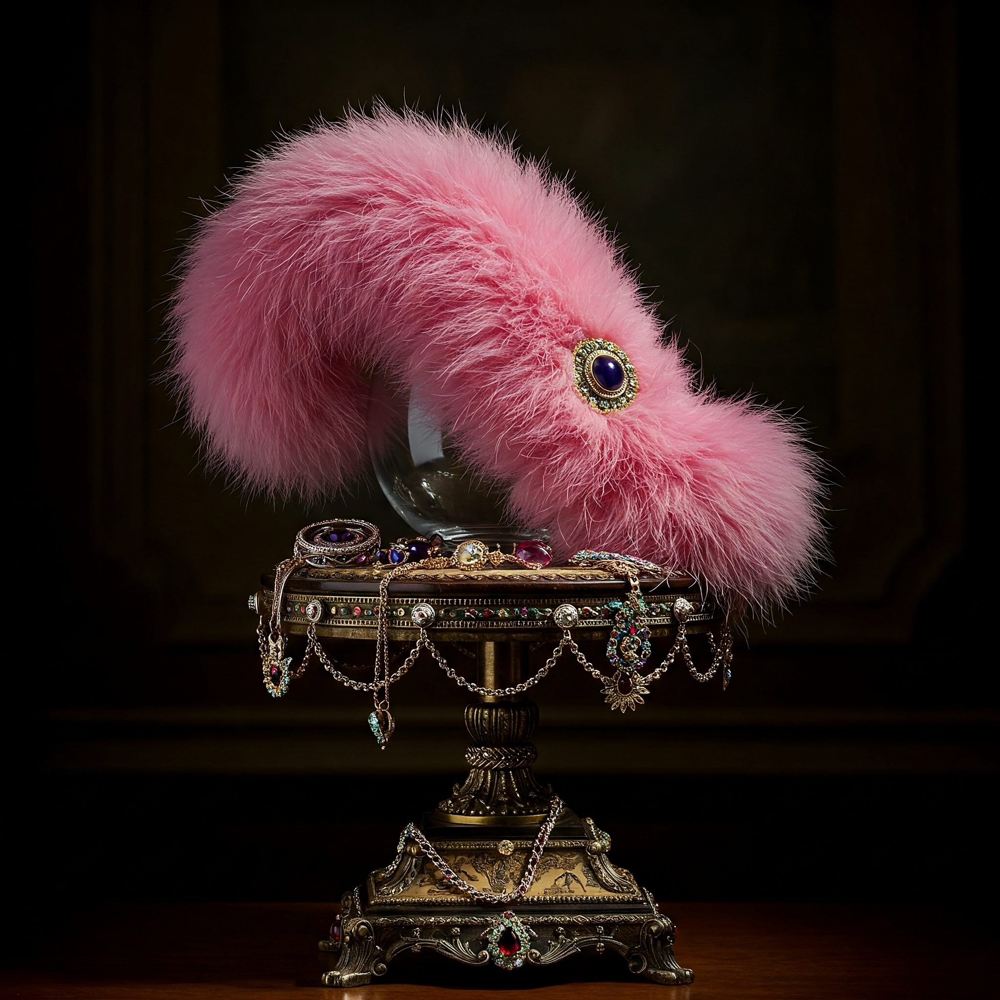

💗 Madame Lintéphora de la Rosa Agazapada
Clasificación: Pelusa de Ombligo Aristofabulosa – Edición Cabaretera Nocturna.
Origen: Extraída del ombligo de Margot Lavigne, vedette retirée del circuito burlesque parisino, justo después de su última reverencia en el Moulin Vert.
Descripción del Barón Von Fluffington III: Ah..., Lintéphora… musa de terciopelo y secretos nocturnos. Su forma curvada es la de un bostezo insinuante, un susurro en plena función. El rosa lujurioso de su textura evoca los vestigios de una boa de plumas olvidada sobre un diván de terciopelo burdeos. El zafiro engarzado que porta no es simple adorno: es testigo ocular de pasiones clandestinas y brindis con champán rosé.
Nota Aromática: Efluvios de talco perfumado con acentos de licor de violetas, humo de cigarro mentolado y un leve toque de perfume vintage derramado accidentalmente en una carta sin enviar.